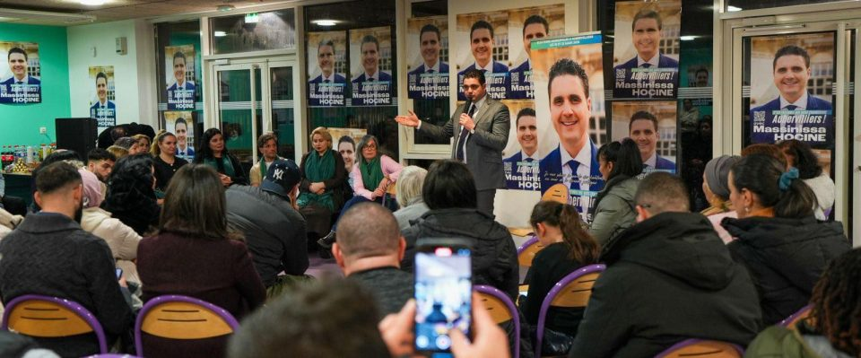

Qui sommes-nous ?
« Ensemble pour Aubervilliers » est un groupe politique indépendant, fondé en mars 2023 au coeur des débats du conseil municipal de la ville et des problématiques des habitants. Un mouvement lancé par Massinissa Hocine avec sa collègue Elisabete Goncalvez, désireux de proposer une alternative à la gestion actuelle de la ville. Face aux pressions internes et aux renoncements opportunistes, seuls deux d’entre eux ont choisi de rester fidèles à leurs engagements : Massinissa Hocine et la co-fondatrice Elisabete Gonçalves. En faisant ce choix difficile, ils ont préféré l’intérêt des Albertivillariens à leur confort politique, convaincus qu’on ne construit pas une ville sur des compromis de façade, mais sur des valeurs solides et une parole tenue. Leur engagement repose sur une volonté de recentrer l’action publique autour des besoins réels des habitants, de dénoncer les dérives budgétaires et le manque de transparence, de défendre les services publics de proximité, le bien-être animal, le logement social et l’identité de la ville. Le groupe s’est illustré par des alertes sur l’insécurité, des prises de position fortes contre la bétonisation, la suppression de l’OMJA, ou encore les dysfonctionnements de l’OPH. À travers ces actions, ils défendent une vision éthique, sociale et démocratique pour Aubervilliers.